MULTIPLICATION
IDENTITIES
Product of sums
What is the area of a rectangle of sides 26 centimetres and 5 centimetres?
Instead of multiplying directly, we can split the product like this:
26 × 5 = (20 + 6) × 5
We can also split the rectangle accordingly:
So area is
100 + 30 = 130 sq.cm
How was the multiplication done here?
26 × 5 = (20 + 6) × 5
= (20 × 5) + (6 × 5)
= 100 + 30
= 130
Now let’s look at a rectangle of sides 26 centimetres
and 15 centimetres:
61
Page 62
Figure fig_ch04_p062_01 (Page 62)
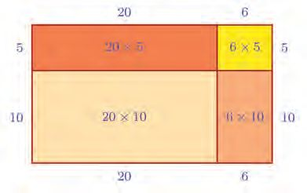
Figure fig_ch04_p062_02 (Page 62)
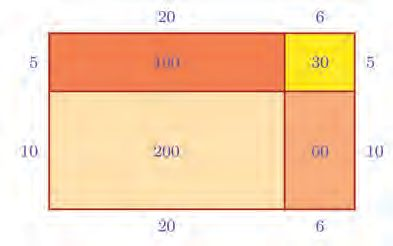
Figure fig_ch04_p062_03 (Page 62)
Standard - IX Mathematics
Here also, if we split the product as,
26 × 15 = (20 + 6) × (10 + 5)
and split the rectangle also according to this, the computations would be a lot easier:
Now we can compute the area as
200 + 100 + 60 + 30 = 390 sq.cm.
Let’s write out how we got these numbers to be added:
26 × 15 = (20 + 6) × (10 + 5)
= (20 × 10) + (20 × 5) + (6 × 10) + (6 × 5)
= 200 + 100 + 60 + 30
= 390
Isn’t this how we find the product when we write the numbers one below the other and
multiply?
26 ×
15
130 26 × 5 = (6 + 20) × 5 = 30 + 100
260 26 × 10 = (6 + 20) × 10 = 60+ 200
390
The operations done here can be explained like this.
To multiply the sum 20 + 6 by the sum 10 + 5, we multiplied each of the numbers 20 and
6 in the first sum by each of the numbers 10 and 5 in the second sum and added together,
all the four products thus got.
This works even if the numbers are not natural numbers.
62
Page 63
Figure fig_ch04_p063_01 (Page 63)
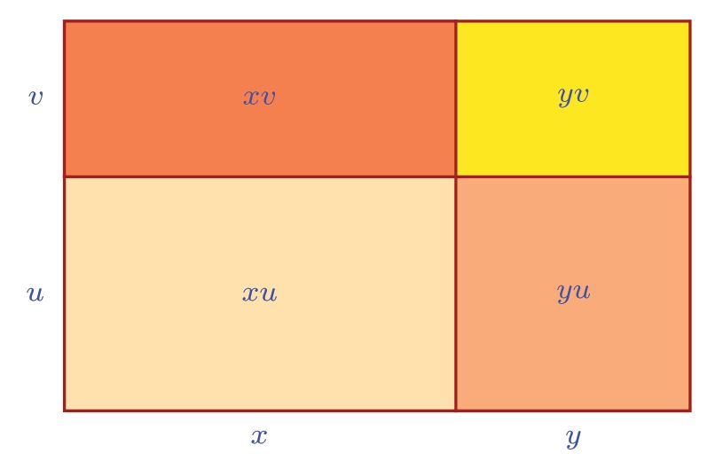
Figure fig_ch04_p063_02 (Page 63)
Multiplication Identities
For example,
1
1
1
1
6 2 × 8 3 = b 6 + 2 l × b8 + 3 l
= (6 × 8) + b6 # 13 l + b 12 # 8 l + b 12 # 13 l
= 48 + 2 + 4 + 16
= 54 16
In general,
To multiply a sum by a sum, we must multiply each number in the first sum by each
number in the second sum and add all these products together.
How about writing this in algebra?
Let’s take the first sum as x + y and the second sum as u + v. To find their product, we
must add xu, xv, yu, yv. Thus
For any positive numbers x, y, u, v
(x + y)(u + v) = xu + xv + yu + yv
This can be seen as areas like this:
This can be used to simplify some computations.
For example, look at 31 × 51
We can do 30 × 50 = 1500 in head.
By the result seen just now,
31 × 51 = (30 + 1) × (50 + 1) = 1500 +30 + 50 + 1 = 1581
and this can also be done mentally.
What is the algebraic equation used here?
(x + 1) (y + 1) = xy + x + y + 1
In other words, knowing the product of two natural numbers, to get the product of the
numbers next to each, we need only add the product of the first numbers, their sum and
then one more.
For example,
21 × 71 = (20 × 70) + 20 + 70 + 1 = 1400 + 91 = 1491
81 × 91 = (80 × 90) + 80 + 90 + 1 = 7200 + 171 = 7371
201 × 401 = (200 × 400) + 200 + 400 +1 = 80000 + 601 = 80601
Just as this gives an easy method to compute the product of numbers increased by one, is
there an easy way to compute the product of numbers increased by two? Think about it:
We can use the general result to find the product of certain fractions also:
b x + 1 lb y + 1 l = xy + b x # 1 l + b 1 # y l + b 1 # 1 l = xy + 1 ^ x + y h + 1
2
2
2
2
2 2
2
4
(2) The product of two numbers is 1400 and their sum is 81. What is the product
of the numbers next to each?
(3) The product of two odd numbers is 621 and their sum is 50. What is the product
of the odd numbers next to each?
64
Page 65
Figure fig_ch04_p065_01 (Page 65)
Multiplication Identities
Special operations
What we write as algebraic identities are general principles on numbers and their
operations. Using them, we can prove some other general results also.
For example,
We can see that the product of two odd numbers is odd by inspecting some pairs of odd
numbers. How do we actually prove this for any two odd numbers?
We’ve seen in Class 7 that the general form of an odd number is
2n + 1, n = 0, 1, 2, 3,...
So we can take two odd numbers in general as 2m + 1 and 2n + 1. Their product is
(2m + 1)(2n + 1) = 4mn + 2m + 2n + 1
Is this also an odd number?
Let’s rewrite this in a slightly different form:
(2m + 1)(2n + 1) =
2(2mn + m + n) + 1
Now isn’t it clear that the product is also an odd number?
Next we note that odd numbers are those numbers which leave remainder 1 on division
by 2.
So, what is the general form of a number which leaves remainder 1 on division by 3?
Such numbers are got by adding 1 to a multiple of 3, right?
This thought leads to their general form:
ST-363-5-MATHS (E)-9-VOL-1
3n + 1, n = 0, 1, 2, 3, ...
What about the product of two such numbers?
(3m + 1) (3n + 1) = 9mn + 3m + 3n + 1
Does the product also leave remainder 1 on division by 3? To see it, we need only write
the product in a slightly different form:
(3m + 1) (3n + 1) =
3(3mn + m + n) + 1
This also is 1 added to a multiple of 3, isn’t it?
In other words, a number which leaves remainder 1 on division by 3.
Let’s look at another kind of problem:
If we take the first four natural numbers, 1, 2, 3, 4
Product of the two numbers at the ends = 1 × 4 = 4
Product of the two numbers in the middle = 2 × 3 = 6
Let’s try this with next four, 2, 3, 4, 5 ?
Product of the two numbers at the ends = 2 × 5 = 10
Product of the two numbers in the middle = 3 × 4 = 12
Try some other four consecutive numbers. Is the difference of the products 2 every time?
How do we prove that this is true for any four consecutive natural numbers?
Four consecutive natural numbers in general can be taken as x, x + 1, x + 2,
x+3
Product of the two numbers at the ends = x(x + 3) = x2 + 3x
Product of the two numbers in the middle = (x + 1)(x+2) = x2 + 3x + 2
This shows the difference is 2 for all such products.
In these equations, we can take any number as x. For natural numbers, we can state this
property in words like this:
For any four consecutive natural numbers, the difference between the products of the
two numbers at the ends and the two numbers in the middle is two
(1) Calculate each of the following for several numbers and guess a
generalization; then prove it using algebra.
(i) The remainder got on division by 3, the product of two numbers one of
which leaves remainder 1 on division by 3 and the other, remainder 2.
(ii) The remainder got on division by 4, the product of two numbers one of
which leaves remainder 1 on division by 4 and the other, remainder 2.
(iii) The difference of the products of the two numbers at the ends and the
two in the middle, of six consecutive natural numbers.
66
Page 67
Figure fig_ch04_p067_01 (Page 67)
Multiplication Identities
(2) Given below is a method to find the product 36 × 28
3×2=6
6 × 100
600
(3 × 8) + (6 × 2) = 36
36 × 10
360
6×8
48
36 × 28
1008
(i) Check these for some other products of two digit numbers.
(ii) Explain why this works using algebra.
(Recall the general algebraic form 10m + n of a two digit number, seen in Class 7)
Number curiosities
We can use algebra to explain some curious properties of numbers also. For example,
look at these products:
12 × 63 = 756
21 × 36 = 756
Usually the product of a pair of two digit numbers and the product of these with their
digits reversed are different (try it!) Are there other pairs giving the same product ?
Look at these products:
32 × 46 = 1472
23 × 64 = 1472
Are there other pairs?
Let’s use algebra
We know that any two digit number is of the form 10m + n
First digit is m and the second digit n
If we reverse the digits?
Then the first digit is n and the second, m; and the number itself is 10n + m.
We want a pair of two digit numbers. we take them as 10m + n and 10p + q.These with
the digits reversed are 10n + m and 10q + p.
67
Page 68
Figure fig_ch04_p068_01 (Page 68)
Standard - IX Mathematics
We want to choose m, n, p, q in such a way that the two pairs have the same product.
The product of the first two is
(10m + n) (10p + q) = 100mp + 10mq + 10np + nq
The products with digits reversed is
(10n + m)(10q + p) = 100nq + 10np + 10mq + mp
Each product is a sum of four numbers. Comparing them, we see that both sums have
10mq + 10np. So for the sums to be equal, the sum of the remaining two must be equal.
That is,
100mp + nq = 100nq + mp
What does this mean?
Can the sum of hundred times a number and another be equal to the sum of hundred
times the second and the first ?
So, the products mp and nq must be equal.
mp = nq
We can also see this using algebra. If the numbers 100mp + nq and 100nq + mp are to be
equal, their difference must be zero. That is,
(100mp + nq) (100nq + mp) = 0
This gives
99mp 99nq = 0
This we can write
99(mp nq) = 0
If 99 times a number is zero, the number itself must be zero, right ? So
mp nq = 0
and this means
mp = nq
So in any pair of two digit numbers we are seeking, the products of the first digits must
be equal to the product of the second digits.
In the first example above we had 12 and 63
Product of the first digits = 1 × 6 = 6
Product of the second digits = 2 × 3 = 6
What about the second example ? Numbers are 32 and 46
Product of the first digits = 3 × 4 = 12
Product of the second digits = 2 × 6 = 12
Similarly, since
2×9 =
18
3×6 =
18
the products 23 × 96 and 32 × 69 must be equal (check).
Can you find other pairs?
Remember some interesting things we found in Class 7 about sums in a calendar ? Now
let’s see something about products of these numbers
Take any month in a calendar and mark four dates which form a square:
SUN
MON
TUE
WED
THU
FRI
SAT
Now which is my
circle ?
5
12
19
26
Multiply the diagonal pairs:
14 × 6 = 84
13 × 7 = 91
And find their difference:
91 84 = 7
Now take another set of four numbers like these:
22 × 30 = 660
23 × 29 = 667
667 660 = 7
Why is the difference 7 every time?
Let’s use algebra to find out.
69
Page 70
Figure fig_ch04_p070_01 (Page 70)
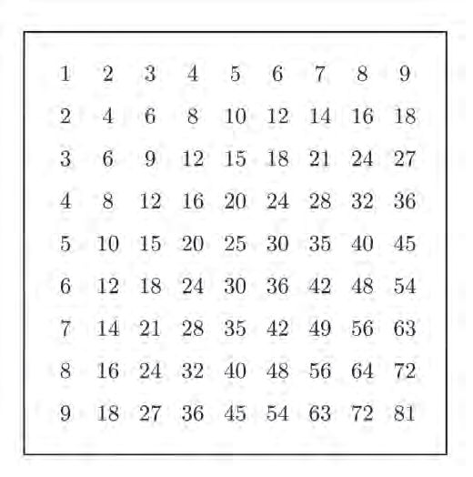
Figure fig_ch04_p070_02 (Page 70)
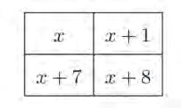
Figure fig_ch04_p070_03 (Page 70)
Standard - IX Mathematics
If we denote the first number of the selected square as x, then the four numbers are like
this:
The diagonal products are x(x + 8) and (x + 1)(x + 7)
The first product is
x(x + 8) = x2 + 8x
And the second product
(x + 1)(x + 7) = x2 + 7x + x + 7 = x2 + 8x + 7
Look at the two products. The difference is 7, isn’t it ?
We can take x as any number, so it is always true for any other part of a calender.
Let’s look at another one
Make a multiplication table like this:
70
Page 71
Figure fig_ch04_p071_01 (Page 71)
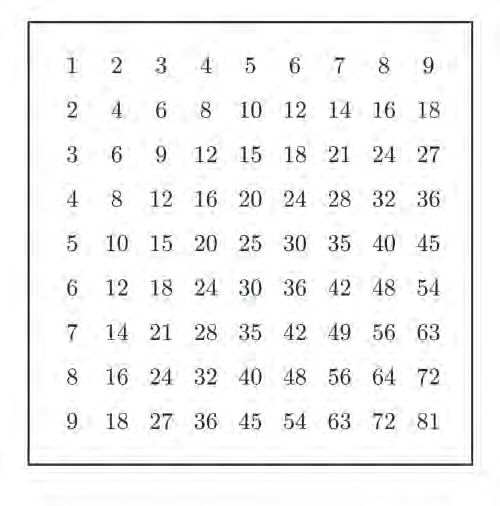
Figure fig_ch04_p071_02 (Page 71)
Multiplication Identities
As we did in the calendar, mark four numbers in a square at different positions:
Instead of multiplying as before, add the diagonal pairs in each square:
12 + 20 = 32
35 + 48 = 83
16 + 15 = 31
40 + 42 = 82
Will the difference of the sums be the same, whatever be the position of the square ?
To check this using algebra, we need to know the general form of the numbers so chosen
from the table.
The first row of the table is just the natural numbers from 1 to 9, the second row is these
numbers multiplied by 2, . . .
In general, for any natural number n from 1 to 9, the numbers in the nth row are
n
2n
3n
4n
5n
6n
7n
8n
9n
What about the next line?
To get it, by what number should we multiply the first row?
71
Page 72
Figure fig_ch04_p072_01 (Page 72)
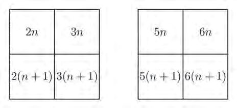
Figure fig_ch04_p072_02 (Page 72)
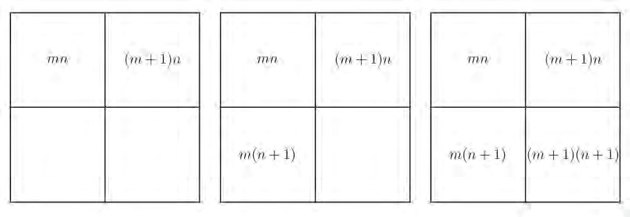
Figure fig_ch04_p072_03 (Page 72)
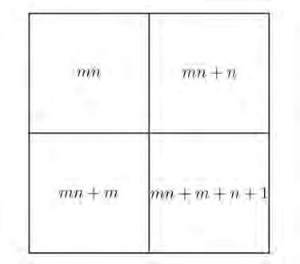
Figure fig_ch04_p072_04 (Page 72)
Standard - IX Mathematics
Let’s look at these two rows together:
n
2n
3n
4n
5n
6n
7n
8n
9n
n + 1 2(n + 1) 3(n + 1) 4(n + 1) 5(n + 1) 6(n + 1) 7(n + 1) 8(n + 1) 9(n + 1)
Now to take four numbers in a square, we can start with any number in the first row
above. For example, we can choose like these:
In general, if we start with the mth multiple of n, what would be the numbers in the
square?
Let’s write them one by one:
Expanding all products, we get
In this, one diagonal sum is
mn + (mn + m + n + 1) = 2mn + m + n + 1
And the other sum is
(mn + n) + (mn + m) = 2mn + n + m
Now don’t you see that the difference of the sums is 1, wherever the square be, and also
why it is so?
(1) Write numbers as shown below:
(i) As we did in the calendar, mark a square of four numbers and find the
difference of the diagonal products. Do we get the same difference for
any such square?
(ii) Explain why this is so, using algebra.
(2) In the multiplication table we’ve made, draw a square of nine numbers,
instead of four, and mark the numbers at the four corners:
(i) What is the difference of the diagonal sums ?
(ii) Explain using algebra why we get the difference as 4 in all such squares.
(iii) What about a square of sixteen numbers?
73
Page 74
Figure fig_ch04_p074_01 (Page 74)
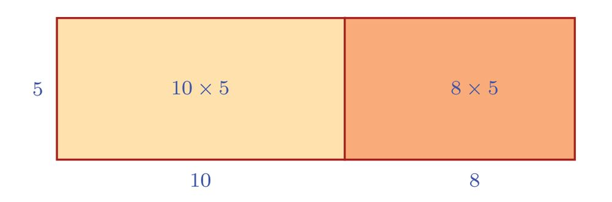
Figure fig_ch04_p074_02 (Page 74)
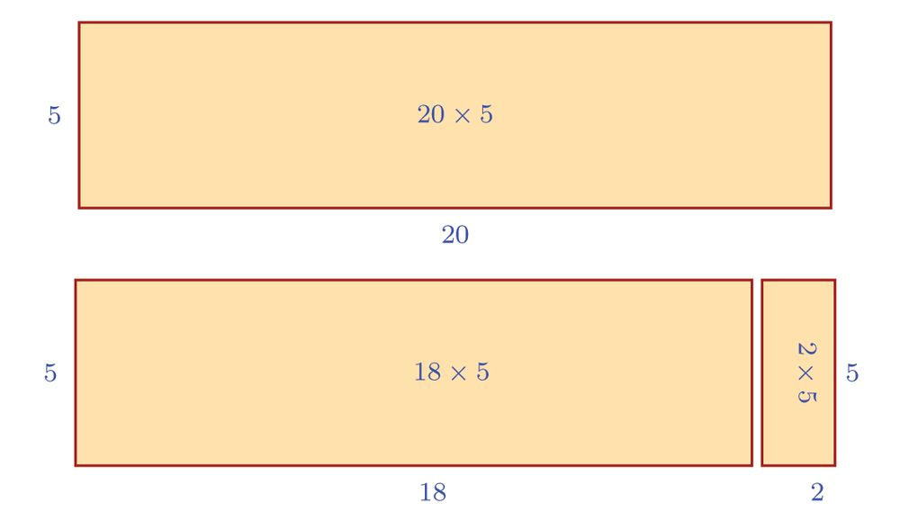
Figure fig_ch04_p074_03 (Page 74)
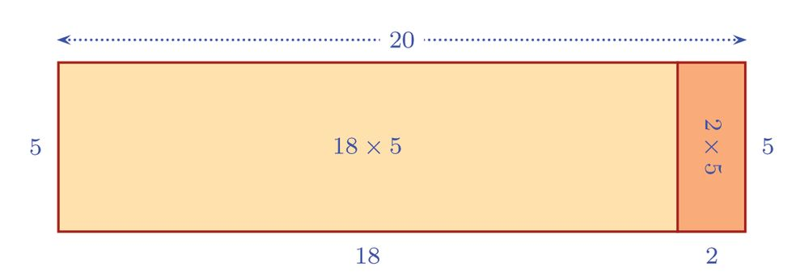
Figure fig_ch04_p074_04 (Page 74)
Standard - IX Mathematics
Multiplication with a difference
How do we calculate 18 × 5 ?
We can do as before:
18 × 5 = (10 + 8) × 5 = (10 × 5) + (8 × 5) = 50 + 40 = 90
There’s another way:
That is,
18 × 5 = (20 2) × 5
= (20 × 5) (2 × 5)
= 100 10
= 90
We can also look at it like this: 18 × 5 and 2 × 5 added together gives 20 × 5:
(18 × 5) + (2 × 5) = (18 + 2) × 5 = 20 × 5
74
Page 75
Figure fig_ch04_p075_01 (Page 75)
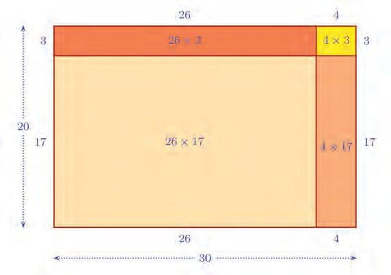
Figure fig_ch04_p075_02 (Page 75)
Multiplication Identities
So,
18 × 5 = (20 × 5) (2 × 5)
Like this, we can compute
38 × 5 = (40 – 2) × 5 = (40 × 5) – (2 × 5) = 200 – 10 = 190
and
45 × 8 = 45 × (10 2) = (45 × 10) (45 × 2) = 450 90 = 360
What did we do in these two calculations? Just as we split the product of a sum by a
number, we can also split the product of a difference by a number.
Now let’s see whether we can split the product of two differences, as we did for the
product of sums.
For example we can write,
26 × 17 = (30 4) × (20 – 3)
How do we split this as four products as in the case of sums?
The easy way to do this is to think how we can enlarge a rectangle of sides 26 and 17 to
one with sides 30 and 20:
From this picture, we can see that
(26 × 17) + (26 × 3) + (4 × 17) + (4 × 3) = 30 × 20
And from this equation, we can see that
26 × 17 = 30 × 20 (26 × 3) (4 × 17) – (4 × 3)
75
Page 76
Figure fig_ch04_p076_01 (Page 76)
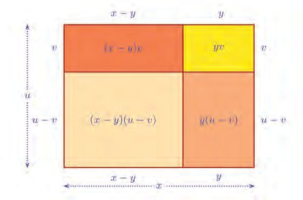
Figure fig_ch04_p076_02 (Page 76)
Standard - IX Mathematics
Now let’s calculate each product on the right side of the equation:
30 × 20 = 600
26 × 3 = (30 – 4) × 3 = 90 12 = 78
4 × 17 = 4 × (20 – 3) = 80 12 = 68
4 × 3 = 12
Thus
(26 × 17) = 600 78 68 12
= 600 (78 + 68 + 12)
= 600 158
= 442
The next thing we think about is whether we can do this without so much computation.
For that we use algebra without actual numbers.
The problem is to split (x y)(u v). As in the problem above, we start with a rectangle
of sides x y and u v and enlarge it to one with sides x and u:
From the picture we see that
(x − y) (u — v) + y(u − v) + (x − y)v + yv = xu
Expanding the middle two products in the sum on the left of the equation, we get
(x y)(u v) + (yu yv) + (xv – yv) + yv = xu
76
Page 77
Figure fig_ch04_p077_01 (Page 77)
Multiplication Identities
This simplifies to
(x y)(u v) + yu – yv + xv = xu
This says that to increase (x y) (u v) to xu, we must add xv and yu and subtract yv
(Can you see this in the picture?)
So to change xu back to (x y)(u v), the added xv and yu must be subtracted and the
subtracted yv must be added back. That is,
(x y) (u v) = xu xv yu + yv
Thus we get another general result about multiplication:
For any positive numbers x, y, u, v with x > y and u > v
(x y)(u v) = xu xv yu + yv
Using this, our first problem can be done much more easily:
26 × 17 = (30 4) × (20 3)
= (30 × 20) (30 × 3) (4 × 20) + (4 × 3)
= 600 90 80 + 12
= 612 170
To subtract 170 from 612, the easy way is to subtract 200 and add 30. Thus
26 × 17 = 612 200 + 30 = 442
Now calulate these products like this:
(i) 38 × 49
(ii) 47 × 99
(iii) 29 × 46
(iv) 9 12 # 19 12
Let’s look at another problem :
Remember how from the product of two natural numbers,we calculated the product of
the next numbers? We did it using the algebraic form of the product of two sums. Like
this, using the equation of the product of differences, we can find the product of the
numbers just before.
77
Page 78
Figure fig_ch04_p078_01 (Page 78)
Standard - IX Mathematics
For example,
29 × 49 = (30 1) × (50 1)
= (30 × 50) (30 × 1) (50 × 1) + (1 × 1)
= 1500 30 50 + 1
= 1500 80 + 1
= 1421
This computation can be given a general algebraic form:
(x 1)(y 1) = xy x y + 1
and we can rewrite it like this:
(x 1)(y 1) = xy (x + y) + 1
This means that if we know the product of two natural numbers, then to calculate the
product of the numbers just before each, we need only subtract the sum from the known
product and add one.
On the other hand, we can compute the product of two numbers, if we know the product
of the numbers just after and the product of the numbers just before each.
For example, suppose that the product of the numbers just after two numbers is 525 and
the product of the numbers just before is 427.
Taking the numbers as x and y, these give
(x + 1)(y + 1) = 525
(x 1)(y 1) = 437
Expanding the products on the left of the equation, we get
xy + x + y + 1 = 525
xy (x + y) +1 = 437
78
Page 79
Figure fig_ch04_p079_01 (Page 79)
Multiplication Identities
Adding these two equations, we get
2xy + 2 = 962
This gives
xy = 12 (962 2) = 480
which is the product of the numbers.
Now instead of adding the equations, we subtract the second from the first. This gives
2(x + y) = 88
so that
x + y = 44
Thus we get the sum of the numbers also.
From the product and the sum, we can also get the difference. Recall the identity
(x y)2 = (x + y)2 4xy
seen in Class 8
So in our problem,
(x y)2 = 442 (4 × 480)
= (42 × 112) – (42 × 120)
= (42 × 121) – (42 × 120)
= 42
which gives
x y =4
From the sum and difference we can calculate the numbers themselves:
x = 12 (44 + 4) = 24
y = 12 (44 4) = 20
(1) The perimeter of a rectangle is 40 centimetres and its area is 70 square
centimetres. Find the area of the rectangle with each side 3 centimetres
shorter.
(2) If the sides of a rectangle are decreased by one metre, its area would be 741square
metres; if increased by one metre, it would be 861 square metres.
(i) What is the area of the rectangle ?
(ii) What is its perimeter ?
(iii) What are the lengths of its sides ?
(3) When each of two numbers are increased by one, the product becomes 1271 and
when each is decreased by one, the product becomes 1131.
(i) What is the product of the numbers ?
(ii) What is their sum ?
(iii) What are the numbers ?
(4) The product of two odd numbers just after each of two odd numbers is 285 and
the product of the odd numbers just before each is 165. What are the numbers?
We have seen identities for the product of two sums and the product of two differences.
What about the product of a sum and a difference?
In other words, how do we split (x + y)(u v) ?
Let’s continue with algebra. First we split the product like this:
(x + y)(u v) = x(u v) + y(u v)
Next we expand each product on the right side of the equation:
x(u v) = xu xv
y(u v) = yu yv
Thus (x + y)(u v) = xu xv + yu yv
For any positive numbers x, y, u, v with u > v
(x + y)(u v) = xu xv + yu yv
80
Page 81
Figure fig_ch04_p081_01 (Page 81)
Multiplication Identities
As an example let’s do 14 × 59,
14 × 59 = (10 + 4) × (60 – 1)
= 600 10 + 240 4
= 590 + 236
= 826
Now try these:
(i) 52 × 19
(ii) 101 × 48
(iii) 97 × 102
(iv) 9 34 # 20 12
Remember how we used the sum and product of two numbers to find the products of
these numbers increased by one and the product of these decreased by one?
What about the product of one number increased by one and the other decreased by one?
Let’s check using 8 and 5.
8 × 5 = 40
(8 + 1) × (5 – 1) = 9 × 4 = 36
(8 – 1) × (5 + 1) = 7 × 6 = 42
Experiment with other pairs of numbers. Can you find anything in general?
If the larger of the numbers is increased by one and the smaller decreased by one, would
the product increase or decrease?
And the other way round?
Let’s use algebra. Denote the larger number by x and the smaller number by y.
If the larger number is increased by one and the smaller number decreased by 1, the
product is
(x + 1)(y − 1) = xy x + y 1
This means from the original product, the larger number x is subtracted and the smaller
number y is added. Then itself the product becomes less; and one also is subtracted.
Thus the product is decreased.
What if it’s the other way round ?
(x 1)(y + 1) = xy + x y 1
The larger number x is added and the smaller number y is subtracted, which increases
the product; but a one is subtracted.
So here there are two cases:
•
If the numbers are consecutive, there would be no change in the product.
•
If the numbers are different and not consecutive, the product would increase.
Think why these are so.
(1) The product of two numbers is 713 and their difference is 8.
(i) What is the product of the larger number increased by one and the smaller
number decreased by one ?
(ii) What is the product of the larger number decreased by one and the smaller
number increased by one ?
(2) The product of two numbers is 5 more than the product of the larger of the
numbers increased by one and the smaller decreased by one. How much is the
increase in the product if the larger is decreased by one and the smaller increased
by one?
(3) The product of the larger of two numbers increased by one and the smaller
decreased by one is 540. The product of the larger decreased by one and the
smaller increased by one is 560.
(i) What is the product of the numbers themselves ?
(ii) What is their difference ?
(iii)What are the numbers ?
(4) If the length of a rectangle is increased by 3 metres and the breadth decreased by
2 metres, its area would decrease by 10 square metres. If the length is decreased
by 2 metres and the breadth increased by 3 metres, the area would increase by 30
square metres. Calculate the length and breadth of the rectangle.